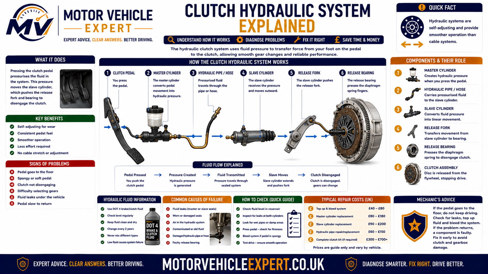
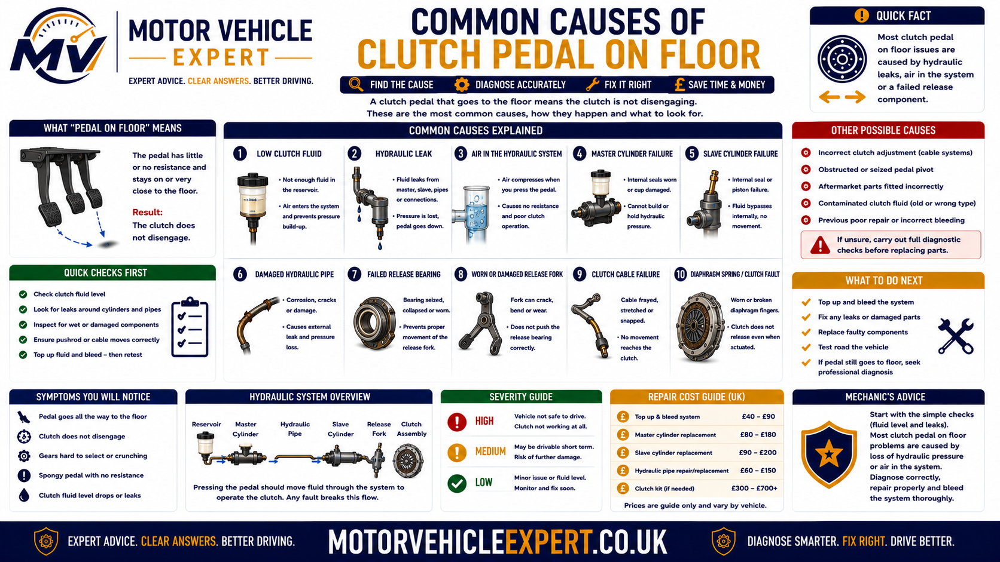
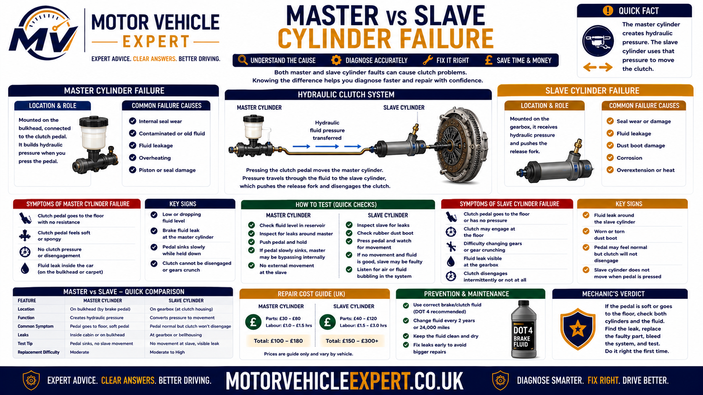
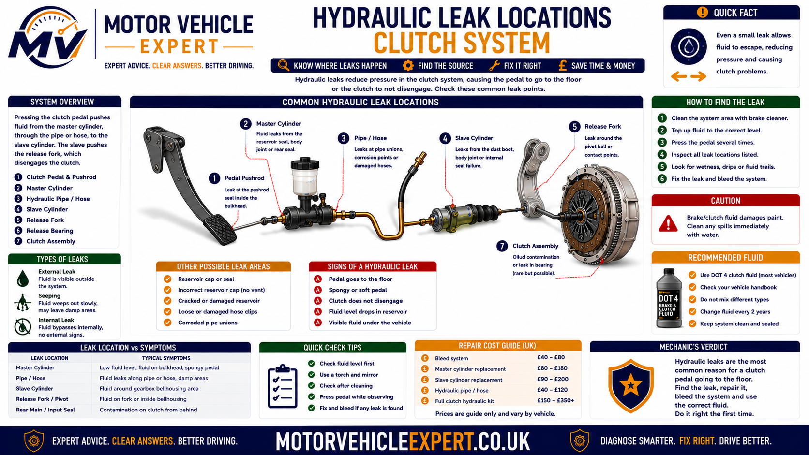
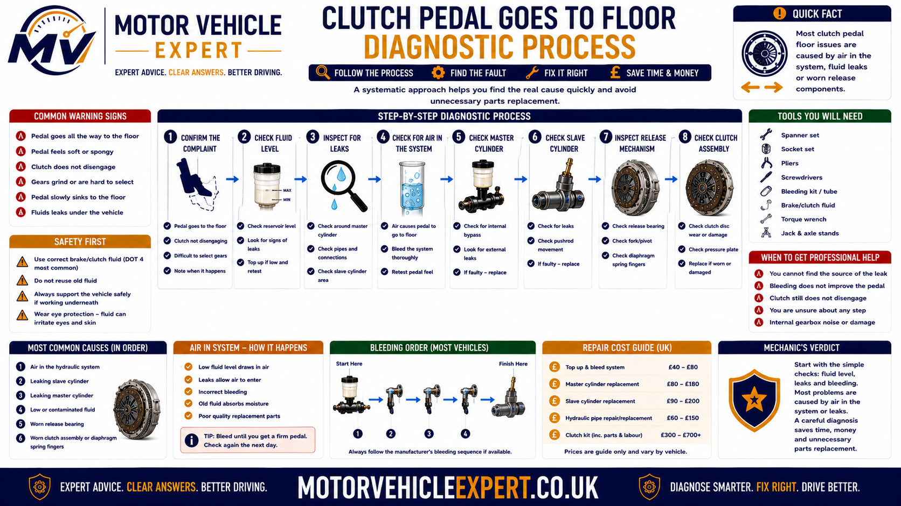
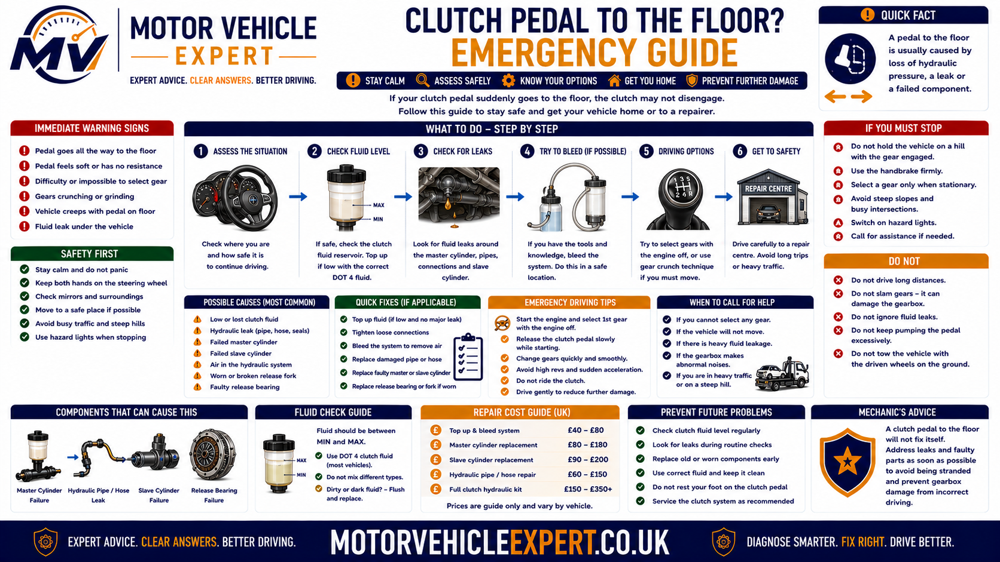
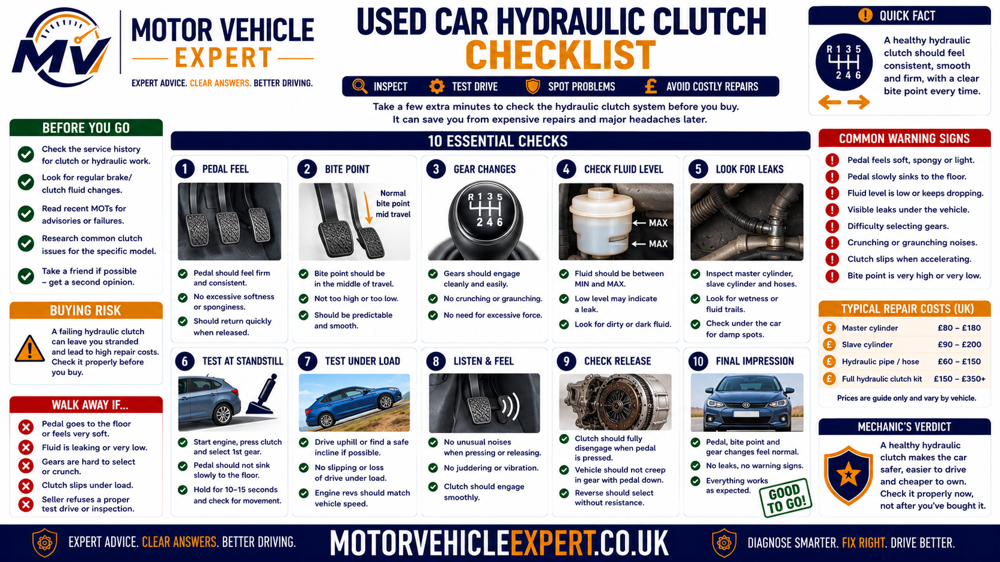
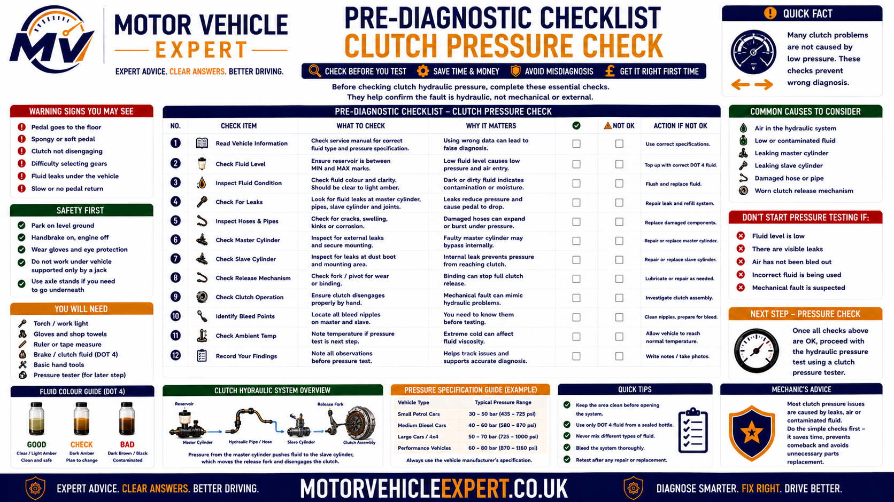

Use the Diagnostic App for Sudden Clutch Pressure Loss
A clutch pedal can fall to the floor because hydraulic pressure has been lost, a cylinder is bypassing internally, a hose or pipe has failed or a mechanical cable or pedal connection has broken. The Motor Vehicle Expert diagnostic app can help organise the symptoms before parts are replaced.
1. Record the Failure
Note whether the pedal dropped suddenly, became soft gradually or lost pressure after repeated use.
2. Identify the System
Establish whether the vehicle uses hydraulic clutch operation or a mechanical cable.
3. Check Supporting Evidence
Record fluid loss, visible leakage, pumping response, pedal resistance and gear-selection problems.
4. Judge the Safety Risk
Decide whether the vehicle can be moved safely or requires immediate recovery.
A worn clutch usually produces rev flare and reduced torque transfer. A pedal that suddenly goes to the floor points first towards the hydraulic circuit, cable or pedal linkage.
Why Did My Clutch Pedal Go to the Floor?
A clutch pedal that suddenly falls to the floor has normally lost the resistance created by hydraulic pressure or the mechanical connection between the pedal and clutch-release system.
On a hydraulic clutch, common causes include low fluid, a leaking or internally bypassing master cylinder, a failed slave cylinder, a damaged hose or pipe and air in the system. On a cable-operated clutch, a snapped cable, detached end fitting or failed pedal quadrant can create the same sudden drop.
Pedal Drops Suddenly
A hydraulic line, cylinder, clutch cable or pedal connection may have failed without warning.
Pedal Feels Soft or Spongy
Air, fluid loss or internal hydraulic-cylinder bypass is likely.
Pumping Restores Pressure
The hydraulic system may contain air, be leaking or have a cylinder that cannot hold pressure.
No Gears With Engine Running
The clutch is not disengaging fully and the vehicle should not be driven.
Typical Evidence
- ✓ The vehicle has a clutch-fluid reservoir.
- ✓ Fluid level is low or falling.
- ✓ The pedal feels soft or spongy.
- ✓ Pumping restores pressure briefly.
- ✓ Fluid is visible near the pedal or gearbox.
- ✓ The pedal sinks under steady pressure.
Typical Evidence
- ! The pedal dropped after a snap or crack.
- ! Almost no resistance remains.
- ! The vehicle uses a clutch cable.
- ! A cable end appears loose or detached.
- ! The pedal quadrant or linkage is damaged.
- ! Pumping the pedal makes no difference.
| Pedal behaviour | Likely fault direction | Immediate response |
|---|---|---|
| Pedal drops suddenly with no resistance | Major hydraulic loss, broken cable or detached linkage | Stop and inspect before driving |
| Pedal feels soft and improves after pumping | Air, fluid loss or cylinder bypass | Locate the hydraulic fault |
| Pedal sinks slowly under steady pressure | Master or slave-cylinder internal bypass | Pressure-test both cylinders |
| Fluid is visible in the footwell | Master-cylinder or feed-line leak | Repair the leak and bleed the system |
| Fluid emerges from the bellhousing | Concentric slave-cylinder failure | Recover and prepare for gearbox removal |
| Gears select with the engine off only | Clutch is not disengaging | Do not force gears or continue driving |
Start by identifying whether pressure was lost hydraulically or whether the pedal became disconnected mechanically. This prevents unnecessary clutch replacement where an external cylinder, hose or cable is responsible.
Pumping the pedal or topping up fluid can restore clutch operation briefly, but the underlying leak or cylinder fault can fail again during the next gear change. Recovery is safer where pressure is unstable.
Is Sudden Clutch-Pedal Pressure Loss Serious?
Yes. A clutch pedal that suddenly goes to the floor means the operating system may no longer be able to disengage the clutch consistently. The vehicle can become difficult to remove from gear, impossible to select into first or reverse, or unsafe to control in slow traffic.
The fault may come from an external hydraulic leak, internal cylinder bypass, a burst hose, a broken cable or a detached pedal connection. Even where pumping the pedal briefly restores pressure, the system can fail again during the next gear change.
Pedal Feels Slightly Soft
Early WarningAir, early fluid loss or internal cylinder wear may be reducing hydraulic pressure.
Pressure Returns After Pumping
Significant FaultThe system cannot create or retain sufficient pressure from one normal pedal stroke.
Pedal Drops With No Resistance
High RiskA major hydraulic leak, broken cable or detached linkage may have removed the clutch connection completely.
No Gears With Engine Running
UrgentThe clutch is not disengaging sufficiently for safe gear selection.
Early Failure Evidence
- ✓ Pedal resistance has become softer.
- ✓ The biting point has moved suddenly.
- ✓ First or reverse gear has become difficult.
- ✓ Pumping improves operation briefly.
- ✓ The fluid level has begun falling.
- ✓ Pedal pressure changes between journeys.
Urgent Failure Evidence
- ! The pedal remains on the floor.
- ! Almost no pedal resistance remains.
- ! Hydraulic fluid is leaking rapidly.
- ! The vehicle is stuck in gear.
- ! The car creeps with the pedal fully pressed.
- ! The engine stalls when the vehicle stops.
- ! A cable, pedal fitting or linkage has broken.
Hydraulic pressure may disappear again without warning. Do not depend on repeated pumping to travel through junctions, traffic or roundabouts.
What Happens When the Clutch Pedal Goes to the Floor?
Pressing the clutch pedal should create enough cable movement or hydraulic pressure to separate the clutch friction plate from the flywheel. When the pedal falls to the floor without normal resistance, that movement is no longer reaching the release mechanism correctly.
The clutch may remain engaged even though the pedal is fully pressed. This keeps the gearbox input shaft rotating and can make first or reverse gear difficult or impossible to select while the engine is running.
1. Pedal Is Pressed
The driver expects the pedal to create hydraulic pressure or pull the clutch cable.
2. Pressure or Connection Is Lost
Fluid escapes, a cylinder bypasses internally or a mechanical component disconnects.
3. Release Travel Is Reduced
The slave cylinder, cable or release fork does not move far enough.
4. Clutch Remains Engaged
Engine torque continues reaching the gearbox despite the pedal being pressed.
5. Input Shaft Keeps Rotating
The gearbox remains loaded and stationary gear selection becomes difficult.
6. Vehicle May Creep
Partial clutch release can allow the car to move while the pedal is on the floor.
7. Engine May Stall
The drivetrain remains connected as the vehicle comes to a stop.
8. Control Becomes Unpredictable
The driver cannot rely on the next pedal application or gear change.
| Result of pressure loss | What the driver notices | Mechanical explanation |
|---|---|---|
| Insufficient release travel | First and reverse become difficult | The clutch remains partly engaged |
| No hydraulic pressure | Pedal drops with little resistance | Fluid pressure is not reaching the slave cylinder |
| Internal cylinder bypass | Pedal sinks or improves after pumping | Fluid passes internal seals instead of moving the clutch |
| Broken cable or linkage | Pedal drops suddenly after a snap | The mechanical connection has separated |
| Partial clutch disengagement | Vehicle creeps with the pedal pressed | Clutch friction surfaces remain partly clamped |
| Complete release failure | Vehicle remains stuck in gear | The engine and gearbox cannot be separated normally |
Forcing first or reverse can damage synchromesh components, selector mechanisms and gear teeth. Switch off safely and arrange diagnosis or recovery.
How the Clutch Hydraulic System Creates Pedal Pressure
A hydraulic clutch transfers pedal force using brake or clutch fluid. The master cylinder creates pressure, the pipe and hose carry that pressure, and the slave cylinder converts it back into mechanical movement at the gearbox.
The system must remain full, sealed and free from air. Fluid does not compress significantly, so a healthy circuit transfers pedal movement quickly and consistently. Air, leakage or internal seal bypass reduces the travel reaching the clutch-release mechanism.

Fluid pressure must reach the slave cylinder without leakage, excessive hose expansion or internal cylinder bypass.
1. Pedal Moves the Pushrod
Pedal travel pushes the master-cylinder piston into its bore.
2. Master Cylinder Builds Pressure
Internal seals force hydraulic fluid into the clutch line.
3. Pressure Travels Through the Pipe
Rigid pipework carries fluid across the engine bay or bulkhead.
4. Flexible Hose Allows Movement
A flexible section accommodates engine and gearbox movement.
5. Slave Cylinder Extends
Hydraulic pressure moves an external piston or concentric release bearing.
6. Release Mechanism Moves
The slave cylinder operates the release fork or acts directly on the pressure plate.
7. Clutch Disengages
Pressure-plate clamping force is reduced so gears can be selected.
8. Fluid Returns After Release
Releasing the pedal allows pressure to fall and the system to return to its rest position.
Fluid Reservoir
Stores the specified hydraulic fluid and compensates for small volume changes.
Master Cylinder
Converts pedal movement into hydraulic pressure.
Reservoir Feed Hose
Supplies fluid from the reservoir to the master cylinder.
Rigid Hydraulic Pipe
Transfers pressure through a strong fixed line.
Flexible Clutch Hose
Allows drivetrain movement while retaining hydraulic pressure.
External Slave Cylinder
Moves a visible release arm on the gearbox.
Concentric Slave Cylinder
Sits inside the bellhousing around the gearbox input shaft.
Bleed Point
Allows trapped air to be removed using the correct procedure.
Clutch Release Mechanism
Converts slave-cylinder movement into clutch disengagement.
| Hydraulic failure | Effect on pedal | Likely evidence |
|---|---|---|
| Master-cylinder external leak | Soft pedal and falling pressure | Fluid near the pedal or bulkhead |
| Master-cylinder internal bypass | Pedal sinks without an obvious leak | Pressure cannot be held under steady load |
| Pipe or hose leak | Pedal becomes soft or drops | Wet pipework, connections or drips |
| Hose expansion | Pedal feels soft with reduced release travel | Hose swells while pressure is applied |
| External slave-cylinder leak | Pressure falls and gears become difficult | Fluid around the gearbox-mounted cylinder |
| Concentric slave-cylinder leak | Pedal pressure disappears | Fluid emerging from the bellhousing |
| Air in the system | Soft or springy pedal | Pumping may restore pressure temporarily |
A master cylinder can bypass internally, while a concentric slave cylinder may leak inside the bellhousing. Pressure and movement tests remain important even when the engine bay appears dry.
Common Symptoms When the Clutch Pedal Goes to the Floor
Sudden pressure loss often appears alongside difficult gear selection, falling fluid level, pumping response or visible leakage. The symptom combination helps distinguish hydraulic failure from a broken cable or pedal linkage.
Pedal Drops Suddenly
Normal resistance disappears during one pedal application.
No Pedal Resistance
The pedal moves freely because pressure or mechanical connection has been lost.
Soft or Spongy Pedal
Air, fluid loss or hose expansion reduces hydraulic firmness.
Pedal Sinks Under Pressure
A master or slave cylinder may be bypassing internally.
Pressure Returns After Pumping
Repeated pedal strokes temporarily rebuild hydraulic pressure.
Pedal Remains on the Floor
The operating system cannot return the pedal normally.
First Gear Is Difficult
The clutch does not disengage enough to unload the gearbox.
Reverse Gear Grinds
The gearbox input shaft continues rotating with the clutch pedal pressed.
Gears Select With Engine Off
This supports clutch-release failure rather than a locked selector mechanism.
Vehicle Creeps Forward
The clutch remains partly engaged despite full pedal travel.
Engine Stalls When Stopping
The clutch remains engaged as road speed reaches zero.
Low Fluid Level
Hydraulic fluid has leaked or the reservoir feed has been uncovered.
Fluid in the Footwell
Master-cylinder or reservoir-feed leakage may be present.
Fluid Near the Gearbox
An external or concentric slave cylinder may have failed.
Sudden Snap or Crack
A clutch cable, pedal quadrant, clevis pin or linkage may have broken.
Intermittent Pressure
Cylinder seals may work during one stroke and bypass during another.
Changing Bite Point
Inconsistent release travel alters where the clutch engages.
Clutch Slip or Judder Afterwards
An internal slave-cylinder leak may have contaminated the clutch.
Intermittent hydraulic pressure is evidence of an active fault. The pedal can drop again at the next junction or gear change.
Why Does the Clutch Pedal Have No Resistance?
A clutch pedal with almost no resistance normally means that hydraulic pressure cannot be created or the mechanical connection between the pedal and clutch-release mechanism has separated.
Empty Hydraulic Circuit
Major fluid loss leaves insufficient fluid to transfer pedal force.
Master-Cylinder Failure
Internal seals no longer build pressure when the pedal moves.
Slave-Cylinder Failure
Fluid escapes or bypasses rather than moving the release mechanism.
Burst Hose or Pipe
Hydraulic fluid leaves the system rapidly during pedal use.
Broken Clutch Cable
The pedal is no longer connected to the gearbox release arm.
Detached Pedal Linkage
A clevis pin, retaining clip, pushrod or cable fitting has separated.
Failed Pedal Quadrant
A plastic or metal cable-adjustment mechanism may have broken.
Disconnected Release Arm
External linkage no longer transfers movement into the bellhousing.
Severe Internal Release Failure
A fork, bearing or pressure-plate component may have collapsed.
| No-resistance pattern | More likely cause | First inspection |
|---|---|---|
| Fluid reservoir is empty | Major hydraulic leak | Master, pipe, hose and slave cylinder |
| Fluid level is normal but pedal will not build pressure | Internal cylinder bypass | Master and slave-cylinder pressure test |
| Failure followed a snap | Broken cable or pedal linkage | Pedal box, cable ends and release arm |
| Fluid leaks from bellhousing | Concentric slave-cylinder failure | Recover and prepare for gearbox removal |
| Pedal linkage moves but release arm does not | Cable or external connection failure | Trace movement along the complete linkage |
| External movement is present but clutch does not release | Internal fork, bearing or pressure-plate fault | Internal clutch-release inspection |
Do not attempt a normal road journey. The clutch may not disengage for stopping or gear changes, and starting the vehicle in gear can cause unexpected movement.
Why Does the Clutch Pedal Feel Soft or Spongy?
A soft or springy pedal normally indicates that part of the pedal movement is compressing air, expanding a damaged hose or bypassing worn cylinder seals instead of moving the slave cylinder fully.
Air in the Hydraulic Circuit
Trapped air compresses and reduces effective release travel.
Low Fluid Level
The master cylinder may draw air from an uncovered reservoir feed.
Master-Cylinder Bypass
Fluid passes worn seals rather than being pushed through the line.
Slave-Cylinder Bypass
Pressure is lost inside the slave cylinder before full release movement occurs.
Expanding Flexible Hose
A weakened hose absorbs pressure by swelling.
Incomplete Bleeding
Air remains trapped after repair or hydraulic-system opening.
Incorrect Bleeding Procedure
Some systems require pressure, vacuum or a specified sequence.
Fluid Contamination
Water, dirt or incorrect fluid can damage seals and alter response.
Loose Hydraulic Connection
A poor union or connector may admit air without a large visible leak.
Inspect fluid pressure and slave-cylinder travel before condemning the friction plate, pressure plate or flywheel.
Why Does Pumping the Clutch Pedal Restore Pressure?
Repeated pedal strokes can temporarily compress trapped air, move additional fluid or overcome internal cylinder bypass. The pedal may become firmer for several gear changes before losing pressure again.
Air Is Compressed Repeatedly
Multiple strokes can create enough temporary slave-cylinder movement to release the clutch.
Master Seals Build Pressure Intermittently
Worn seals may hold during one stroke and bypass during another.
Remaining Fluid Is Repositioned
Pumping can temporarily move fluid through a partly empty circuit.
Slave Movement Increases Briefly
Repeated strokes may extend the slave cylinder farther.
Pressure Falls Again
Leakage, air or internal bypass remains after pumping stops.
Gear Selection Temporarily Improves
Increased release travel may briefly unload the gearbox input shaft.
| Pumping result | Possible explanation | Required diagnosis |
|---|---|---|
| Pedal becomes firm after several strokes | Air or internal cylinder bypass | Leak check and cylinder-pressure test |
| Pedal firms but quickly becomes soft again | Active leak or severe bypass | Locate the failed component immediately |
| Pumping has no effect | Major fluid loss or broken mechanical connection | Inspect fluid circuit, cable and pedal linkage |
| Pedal firms only when cold | Temperature-sensitive seals or fluid behaviour | Compare cold and hot hydraulic pressure |
| Gear selection improves after pumping | Release travel was previously insufficient | Measure master and slave-cylinder travel |
The pressure can disappear during the next gear change. Use the response only as diagnostic evidence and arrange recovery where normal operation is unreliable.
Why Does Pressure Loss Make Gears Difficult to Select?
The clutch must disengage far enough to stop engine torque reaching the gearbox input shaft. If hydraulic or cable movement is lost, the input shaft remains driven and places load on the gear selectors and synchronisers.
First Gear Resists Selection
The stationary gearbox remains loaded by the rotating input shaft.
Reverse Gear Grinds
Reverse commonly exposes clutch drag because it may lack full synchronisation.
Vehicle Creeps With Pedal Down
Partial clutch engagement continues to transmit torque.
Engine Stalls at a Stop
The clutch remains engaged as vehicle speed reaches zero.
Gear Lever Feels Locked
Drivetrain load prevents the selector mechanism moving freely.
Gears Select With Engine Off
Removing engine rotation unloads the gearbox and supports a clutch-release fault.
| Gear-selection behaviour | Possible meaning | Recommended response |
|---|---|---|
| Gears select normally with engine off | Clutch is not disengaging fully | Diagnose release pressure and travel |
| Reverse grinds with pedal fully down | Input shaft remains rotating | Stop forcing gear selection |
| Vehicle creeps in first gear | Significant clutch drag | Stop driving and arrange repair |
| Gears remain difficult with engine off | Selector or gearbox fault may also be present | Inspect linkage and gearbox separately |
| Vehicle remains stuck in gear | Complete release failure | Switch off safely and arrange recovery |
Hydraulic or cable repair may be relatively straightforward. Damaged synchronisers, selectors or gear teeth can add major gearbox costs.
Why Is the Clutch-Fluid Level Low?
Hydraulic clutch fluid does not normally disappear through use. A falling level indicates external leakage, a damaged connection or fluid escaping into the bellhousing through an internal slave cylinder.
Many vehicles share one reservoir between the brake and clutch systems. The clutch feed may sit higher in the reservoir, allowing clutch operation to fail before the brake-fluid warning level is reached.
Master-Cylinder Leak
Fluid may escape around the pushrod, footwell or bulkhead.
Reservoir Feed Leak
A hose, seal or connector between the reservoir and master cylinder may fail.
Rigid Pipe Corrosion
Corrosion or impact damage can create a pinhole or split.
Flexible Hose Leak
Cracks, abrasion or failed crimp joints allow fluid to escape.
Hydraulic Union Leak
Damaged seats, seals or retaining clips can leak under pressure.
External Slave-Cylinder Leak
Fluid appears around the gearbox-mounted cylinder or dust boot.
Concentric Slave-Cylinder Leak
Fluid escapes inside the bellhousing and may contaminate the clutch.
Incorrect Bleed-Screw Seal
A loose or damaged bleed point can release fluid and draw air.
Previous Repair Not Bled Correctly
The apparent level may fall as trapped air moves through the circuit after repair.
Common Evidence
- ✓ Fluid around the clutch pedal.
- ✓ Dampness on the bulkhead.
- ✓ Wet hydraulic pipe or hose.
- ✓ Fluid around an external slave cylinder.
- ✓ Drips beneath the engine or gearbox.
Common Evidence
- ! Fluid level falls with no obvious external leak.
- ! Fluid emerges from the bellhousing.
- ! Pedal pressure repeatedly disappears.
- ! Clutch slip or judder develops afterwards.
- ! A burning smell follows contamination.
Fluid can be lost suddenly, and air already inside the system can prevent reliable clutch operation even after the reservoir is refilled.
Common Causes of a Clutch Pedal Going to the Floor
Sudden pedal pressure loss is usually caused by hydraulic leakage, internal cylinder failure or a broken mechanical connection. Ordinary clutch friction wear is less likely to make the pedal drop suddenly by itself.

The fluid level, pumping response, visible leakage and clutch operating-system type help identify the most likely cause.
Low Clutch Fluid
A leak lowers the reservoir level and allows air into the hydraulic circuit.
Master-Cylinder External Leak
Fluid escapes near the pedal, pushrod or bulkhead.
Master-Cylinder Internal Bypass
Worn seals allow fluid to pass the piston without an obvious external leak.
External Slave-Cylinder Leak
Fluid escapes at the gearbox and release travel is lost.
Concentric Slave-Cylinder Failure
Internal leakage inside the bellhousing causes sudden pressure loss and possible clutch contamination.
Air in the Hydraulic System
Air compresses and reduces movement reaching the slave cylinder.
Burst Flexible Hose
A split hose or failed crimp joint releases fluid under pressure.
Expanded Hydraulic Hose
A weakened hose absorbs pedal force by swelling.
Corroded Hydraulic Pipe
Rust can create a leak that becomes severe during pedal use.
Failed Pipe Union or Connector
A damaged seal, clip or union allows pressure and fluid loss.
Broken Clutch Cable
The pedal loses its mechanical connection to the release arm.
Detached Cable End
A failed clip or fitting separates the cable at the pedal or gearbox.
Failed Pedal Quadrant
An automatic adjuster or cable quadrant can break suddenly.
Detached Master Pushrod
A clevis pin or retaining clip fails at the pedal connection.
Cracked Pedal Bracket
Structural movement prevents full pressure generation.
Release-Fork Failure
A cracked, bent or detached fork stops movement reaching the clutch.
Release-Bearing Collapse
Bearing damage can remove normal resistance or jam the release system.
Pressure-Plate Failure
Broken diaphragm fingers can cause sudden abnormal pedal movement.
| Symptom pattern | More likely cause | First diagnostic area |
|---|---|---|
| Soft pedal with low fluid | External hydraulic leak | Master, pipe, hose and slave cylinder |
| Pedal sinks but fluid level stays normal | Internal master or slave-cylinder bypass | Hydraulic pressure testing |
| Pressure improves after pumping | Air, leakage or internal seal failure | Leak test and correct bleeding |
| Fluid appears in the footwell | Master-cylinder leak | Pedal-side hydraulic components |
| Fluid emerges from bellhousing | Concentric slave-cylinder failure | Gearbox removal and clutch inspection |
| Pedal drops after a snap with no fluid loss | Broken cable or pedal linkage | Pedal box, cable and release arm |
| External mechanism moves but clutch does not release | Fork, bearing or pressure-plate failure | Internal clutch-release system |
The friction plate may be serviceable even though the pedal has failed. Prove whether pressure or mechanical movement is lost before authorising internal clutch replacement.
Clutch Master-Cylinder Failure
The clutch master cylinder creates hydraulic pressure when the pedal is pressed. If its seals leak externally, bypass internally or its piston fails to move correctly, the pedal may sink to the floor without producing enough slave-cylinder travel.
An internally bypassing master cylinder may leave the reservoir level unchanged because the fluid remains inside the hydraulic circuit. This is why the absence of an obvious leak does not prove the master cylinder is healthy.
External Pushrod-Seal Leak
Fluid escapes around the master-cylinder pushrod and may enter the driver's footwell.
Internal Seal Bypass
Hydraulic fluid passes the piston seals instead of being forced towards the slave cylinder.
Piston Bore Damage
Corrosion, scoring or contamination prevents the seals holding pressure consistently.
Broken Internal Spring
The piston may not return or prepare correctly for the next pedal stroke.
Blocked Compensation Port
Fluid cannot move correctly between the cylinder and reservoir as pedal position changes.
Restricted Reservoir Feed
A blocked hose, seal or connector prevents the cylinder receiving sufficient fluid.
Detached Pushrod
A failed clevis pin or retaining clip disconnects the pedal from the cylinder piston.
Incorrect Pushrod Adjustment
Incorrect free play can reduce piston stroke or prevent full hydraulic compensation.
Loose Cylinder Mounting
Bulkhead or bracket movement absorbs pedal travel instead of creating pressure.
Supporting Evidence
- ✓ Fluid is visible near the clutch pedal.
- ✓ The pedal sinks under steady pressure.
- ✓ Pumping the pedal creates temporary pressure.
- ✓ Master-cylinder output is inconsistent.
- ✓ No broken clutch cable is fitted.
- ✓ The pushrod or pedal connection is damaged.
Do Not Overlook...
- ! A leaking slave cylinder.
- ! A restricted or expanding hydraulic hose.
- ! Air entering elsewhere in the system.
- ! A loose hydraulic connector.
- ! A failed pedal bracket or clevis pin.
- ! Internal clutch-release resistance.
| Master-cylinder result | Possible interpretation | Repair direction |
|---|---|---|
| Fluid leaks around the pedal pushrod | External master-cylinder seal failure | Replace the cylinder and bleed the system |
| Pedal sinks with no external leak | Internal seal bypass | Confirm pressure loss and replace the cylinder |
| Piston does not return completely | Binding piston, pushrod or compensation fault | Inspect adjustment and cylinder condition |
| Pedal moves but master pushrod does not | Clevis, clip or pedal-linkage failure | Repair the mechanical connection |
| Master output is strong and stable | Fault may be downstream | Test the hose and slave cylinder |
| Replacement cylinder gives abnormal travel | Incorrect part, pushrod or installation | Verify compatibility and pedal geometry |
Internal bypass can allow the pedal to fall without losing fluid externally. The cylinder must be assessed by pressure generation and pressure-holding ability.
Clutch Slave-Cylinder Failure
The slave cylinder receives hydraulic pressure from the master cylinder and converts it into clutch-release movement. A leak, seized piston or internal seal failure can leave the pedal on the floor and prevent the clutch disengaging.
Slave cylinders may be mounted externally on the gearbox or fitted concentrically around the gearbox input shaft inside the bellhousing. Internal concentric units normally require gearbox removal.
External Seal Leak
Fluid escapes around the piston, dust boot or cylinder body.
Internal Seal Bypass
Pressure is lost inside the cylinder without a large visible leak.
Piston Seizure
Corrosion or bore damage prevents normal movement.
Concentric Seal Failure
Fluid leaks inside the bellhousing and may contaminate the clutch.
Concentric Bearing Failure
The combined slave cylinder and release bearing may collapse or bind.
Over-Extended Piston
Incorrect release geometry can push the slave cylinder beyond its designed travel.
Loose External Mounting
Cylinder movement absorbs hydraulic travel instead of moving the release arm.
Damaged Pushrod
A bent, detached or incorrectly seated rod fails to operate the release fork.
Incorrect Replacement Cylinder
Wrong bore size or piston travel can prevent correct clutch release.
Typical Evidence
- ✓ Fluid is visible on the gearbox casing.
- ✓ The dust boot is wet.
- ✓ Slave movement is reduced or inconsistent.
- ✓ The piston does not return normally.
- ✓ Gearbox removal is not usually needed.
Typical Evidence
- ! Fluid emerges from the bellhousing.
- ! No external gearbox cylinder is fitted.
- ! The reservoir level falls repeatedly.
- ! Clutch slip or judder follows the leak.
- ! Gearbox removal is normally required.
| Slave-cylinder finding | Likely effect | Recommended repair |
|---|---|---|
| External cylinder is visibly leaking | Fluid and pressure loss | Replace the cylinder and bleed correctly |
| External piston moves too little | Insufficient clutch-release travel | Separate upstream pressure loss from cylinder failure |
| External piston extends but does not return | Sticking cylinder or trapped pressure | Test the hose and master-cylinder compensation |
| Fluid appears from the bellhousing | Concentric slave-cylinder leak | Remove the gearbox and inspect the clutch |
| Pedal loses pressure with no external leak | Master or slave internal bypass | Pressure-test the complete circuit |
| New slave over-extends or fails quickly | Incorrect geometry or installation | Check component compatibility and release travel |
Hydraulic fluid on the friction plate can cause slip, judder and heat damage. The clutch and flywheel should be assessed when the gearbox is removed.
Master Cylinder vs Slave Cylinder Failure
The master cylinder creates pressure at the pedal, while the slave cylinder converts that pressure into movement at the gearbox. Either component can cause a pedal to fall to the floor, but the leak location and test results differ.

Pressure testing is important where neither cylinder shows a clear external leak.
Creates Hydraulic Pressure
- ✓ Mounted near the clutch pedal or bulkhead.
- ✓ Connected directly to the pedal pushrod.
- ✓ May leak into the driver's footwell.
- ✓ Can bypass internally with no visible leak.
- ✓ Pedal may sink under steady pressure.
- ✓ Usually accessible without gearbox removal.
Creates Clutch-Release Movement
- ✓ Mounted on or inside the gearbox.
- ✓ Operates the release arm or bearing.
- ✓ External units may leak onto the gearbox.
- ✓ Concentric units can leak into the bellhousing.
- ✓ Failure reduces clutch-release travel.
- ✓ Internal units normally require gearbox removal.
| Comparison point | Master cylinder | Slave cylinder |
|---|---|---|
| Primary purpose | Create hydraulic pressure | Convert pressure into release movement |
| Typical location | Pedal or bulkhead area | Gearbox exterior or bellhousing interior |
| Common visible leak | Footwell or engine-bay bulkhead | Gearbox casing or bellhousing |
| Internal bypass possible | Yes | Yes |
| Pedal sinks under steady pressure | Common evidence | Also possible |
| Pumping improves pressure | Possible | Possible |
| Gearbox removal required | Normally no | Only for a concentric internal unit |
| Clutch contamination risk | Low unless fluid reaches bellhousing | High with concentric leakage |
Master and slave-cylinder faults can produce similar soft or sinking pedals. Compare pressure before and after the hydraulic line and inspect the precise leak location.
Clutch Hydraulic Hose and Pipe Faults
The hydraulic pipe and flexible hose must carry pressure without leaking, expanding or restricting flow. A failed connection can cause immediate pressure loss, while a weakened hose may create a gradually softening pedal.
Burst Flexible Hose
A split hose can release most of the hydraulic fluid during one pedal application.
Hose Crimp Failure
Fluid leaks where the flexible section joins its metal fitting.
Hose Expansion
A weakened hose swells and absorbs pressure instead of moving the slave cylinder.
Internal Hose Collapse
A damaged inner lining restricts flow and creates inconsistent clutch operation.
Corroded Rigid Pipe
Rust weakens the hydraulic line until a pinhole or split forms.
Kinked Hydraulic Pipe
Accident damage or incorrect routing reduces fluid movement.
Damaged Flared Union
A poor sealing surface leaks when pedal pressure rises.
Failed Quick Connector
A seal or retaining clip can release suddenly.
Loose Bleed Screw
Fluid escapes and air enters through the bleed point.
Heat-Damaged Hose
Exhaust or engine heat weakens the rubber and surrounding fittings.
Abrasion Damage
Contact with brackets, bodywork or rotating parts wears through the hydraulic line.
Incorrect Replacement Line
Wrong fittings, length or internal diameter can affect pressure and bleeding.
Typical Evidence
- ✓ Fluid level falls.
- ✓ Pipework or fittings are visibly wet.
- ✓ Pedal pressure disappears suddenly.
- ✓ Air returns after bleeding.
- ✓ Drips appear during pedal operation.
Typical Evidence
- ! Pedal feels soft despite no major leak.
- ! Hose visibly swells under pressure.
- ! Slave-cylinder travel is reduced.
- ! Pedal return or pressure changes when hot.
- ! Opening the circuit changes trapped pressure.
Internal lining damage and pressure expansion may only appear while the pedal is being operated. Dynamic inspection can be more useful than a visual check alone.
Air in the Clutch Hydraulic System
Hydraulic fluid transfers pedal movement because it compresses very little. Air compresses significantly, so part of the pedal stroke is lost before enough pressure reaches the slave cylinder.
Air usually enters because fluid has leaked, the reservoir ran low or the hydraulic system was opened during repair. Bleeding is only a permanent solution after the entry point has been corrected.
Reservoir Ran Low
The master cylinder drew air through its fluid-feed connection.
External Leak
Fluid escapes and air enters through a cylinder, pipe, hose or union.
System Opened During Repair
Air remains after cylinder, hose or clutch work.
Incorrect Bleeding Sequence
Air remains trapped because the required procedure was not followed.
Concentric Slave Air Pocket
Internal slave-cylinder design may trap air at a high point.
Loose Bleed Connection
Air is drawn back into the system during bleeding.
Master Cylinder Not Bench-Bled
Air remains inside a replacement cylinder where the procedure requires preparation.
Shared Reservoir Feed Exposed
The clutch circuit draws air before the main reservoir appears completely empty.
Incorrect Fluid-Filling Method
Rapid or incomplete filling can leave air throughout the hydraulic circuit.
| Air-related symptom | Likely explanation | Correct response |
|---|---|---|
| Pedal feels spongy | Air compresses during pedal movement | Find the entry point and bleed correctly |
| Pumping improves pressure | Repeated strokes compress or reposition air | Inspect for leakage before bleeding |
| Air returns after several days | An active leak or poor connection remains | Pressure-test the hydraulic circuit |
| New parts fitted but pedal remains soft | Incomplete bleeding or incorrect installation | Follow the vehicle-specific bleeding method |
| Pressure improves briefly after bleeding | Fault source has not been corrected | Check cylinders, hose, pipe and connectors |
If the pedal becomes soft again after bleeding, investigate the leak, loose connection, failed seal or incorrect bleeding procedure rather than bleeding it repeatedly.
Can a Broken Clutch Cable Make the Pedal Fall to the Floor?
Yes. On a cable-operated clutch, the cable provides the mechanical connection between the pedal and gearbox release arm. A complete break can remove pedal resistance instantly.
Cable systems do not use clutch hydraulic fluid. A sudden pedal drop with no visible fluid system or leakage therefore points towards the cable, pedal quadrant, end fittings or release arm.
Snapped Inner Cable
The steel cable breaks and no longer transfers pedal force.
Frayed Cable Finally Breaks
Progressive strand damage ends in sudden complete failure.
Detached Pedal End
A hook, clip or cable nipple separates from the pedal.
Detached Gearbox End
The cable separates from the release arm or support bracket.
Broken Automatic Adjuster
A ratchet or quadrant releases cable tension suddenly.
Collapsed Outer Casing
The casing fails and absorbs pedal travel.
Broken Bulkhead Mount
The cable support moves instead of transmitting pedal force.
Failed Release-Arm Connection
A pin, clip or lever connection breaks at the gearbox.
Incorrect Cable Installation
Poor routing or wrong adjustment causes early failure.
Supporting Evidence
- ✓ Pedal dropped after a snap.
- ✓ Almost no pedal resistance remains.
- ✓ The vehicle has no clutch hydraulic circuit.
- ✓ Cable movement is absent at the gearbox.
- ✓ A loose or frayed cable is visible.
- ✓ Pumping the pedal makes no difference.
Also Check...
- ! Pedal quadrant and adjuster condition.
- ! Cable support brackets.
- ! Gearbox release-arm movement.
- ! Fork and pivot resistance.
- ! Whether a heavy clutch caused the cable failure.
- ! Correct replacement cable routing.
A seized release arm, heavy pressure plate or damaged pedal mechanism can overload the new cable and cause another failure.
Clutch Pedal and Linkage Faults
The clutch pedal must remain securely connected to the master- cylinder pushrod or cable. A broken pin, retaining clip, quadrant or pedal bracket can make the pedal fall without any hydraulic or clutch friction failure.
Clevis Pin Failure
The pin connecting the pedal and pushrod wears through or breaks.
Retaining Clip Detaches
The pushrod or cable end separates from the pedal.
Elongated Pedal Hole
Wear creates excessive lost movement and can release the linkage.
Cracked Pedal Arm
The pedal bends or fractures rather than moving the operating system.
Cracked Pedal Bracket
The mounting structure flexes or fails under load.
Bulkhead Failure
Metal around the master cylinder or cable mount cracks and moves.
Failed Cable Quadrant
A plastic or metal sector breaks and releases cable tension.
Master Pushrod Breakage
The pushrod fractures or separates from the piston.
Incorrect Pedal Assembly
Missing spacers, clips or incorrectly fitted parts cause misalignment.
| Pedal-linkage result | Possible fault | Repair direction |
|---|---|---|
| Pedal moves but pushrod remains still | Clevis, clip or pedal-hole failure | Repair the pedal connection |
| Pedal bracket moves visibly | Cracked bracket or bulkhead | Repair or replace the structural mounting |
| Cable goes slack at the pedal | Quadrant or cable-end failure | Inspect the complete cable mechanism |
| Pushrod is connected but has excessive play | Worn pin, bush or pedal hole | Renew worn linkage parts |
| Failure followed recent pedal work | Incorrect reassembly or missing retaining hardware | Compare assembly with the correct specification |
A disconnected pushrod can imitate complete master-cylinder failure while the hydraulic components remain serviceable.
Internal Release-System Faults
If hydraulic pressure or cable movement reaches the gearbox but the clutch still does not release, the fault may be inside the bellhousing. Release-fork, bearing and pressure-plate failures can alter pedal resistance suddenly.
Cracked Release Fork
The fork bends or separates instead of moving the release bearing.
Fork Pivot Failure
A worn or broken pivot changes leverage and release travel.
Fork Retaining-Clip Failure
The fork or bearing moves out of its correct position.
Release-Bearing Collapse
Internal bearing failure removes normal support and movement.
Release Bearing Off Its Guide
Misalignment prevents force reaching the pressure plate correctly.
Damaged Guide Tube
Cracking or distortion interferes with bearing travel.
Broken Diaphragm Fingers
Pressure-plate spring fingers fracture or collapse.
Pressure-Plate Cover Failure
Structural damage causes sudden abnormal release movement.
Incorrect Clutch Installation
Wrong parts or assembly error creates incorrect release geometry.
Concentric Slave Collapse
The internal hydraulic bearing unit fails mechanically or hydraulically.
Bellhousing Misalignment
Incorrect gearbox alignment causes release parts to bind or over-travel.
Severe Clutch Overheating
Heat damage weakens pressure-plate and release components.
Supporting Evidence
- ✓ Master-cylinder output is correct.
- ✓ Slave-cylinder travel reaches specification.
- ✓ Cable or release-arm movement is present.
- ✓ Clutch still fails to disengage.
- ✓ Failure followed a crack or metallic noise.
- ✓ Recent clutch replacement preceded the fault.
Required Findings
- ! Fork and pivot integrity.
- ! Release-bearing condition and alignment.
- ! Guide-tube condition.
- ! Pressure-plate diaphragm condition.
- ! Clutch contamination or heat damage.
- ! Flywheel condition and component compatibility.
Confirm pedal, hydraulic or cable movement first unless fluid is clearly leaking from the bellhousing or internal mechanical failure is already evident.
Where Does Clutch Hydraulic Fluid Leak?
Clutch-fluid leakage can occur anywhere from the reservoir and master cylinder to the pipework, flexible hose and slave cylinder. The location of the fluid often identifies the failed component.

Inspect the complete circuit because fluid can travel along panels, hoses and gearbox casings before dripping elsewhere.
Fluid Reservoir
Cracks, cap damage or an incorrect seal can allow leakage.
Reservoir Feed Hose
Age-hardened rubber and loose connections can leak at low pressure.
Master-Cylinder Pushrod Seal
Fluid enters the footwell around the clutch pedal.
Master-Cylinder Body
Housing cracks or failed seals leak around the bulkhead.
Master-Cylinder Outlet
A damaged union or quick connector leaks under pedal pressure.
Rigid Hydraulic Pipe
Corrosion, vibration or impact damage creates fluid loss.
Flexible Hose
Cracks, abrasion and failed crimps leak as pressure rises.
Pipe and Hose Connectors
Damaged seals, clips or flared seats allow leakage and air entry.
Bleed Screw
A loose screw or damaged seat leaks around the bleed point.
External Slave-Cylinder Seal
Fluid collects inside the dust boot or on the gearbox casing.
Slave-Cylinder Connection
The inlet fitting or seal can fail independently of the cylinder.
Concentric Slave Cylinder
Fluid leaks inside the bellhousing around the gearbox input shaft.
| Fluid location | Likely source | Repair implication |
|---|---|---|
| Driver's footwell | Master-cylinder pushrod seal or feed connection | Pedal-side hydraulic repair |
| Engine-bay bulkhead | Master-cylinder body, outlet or reservoir feed | Inspect the master cylinder and connections |
| Along hydraulic pipework | Corroded pipe, union or hose | Replace the damaged line and bleed the system |
| Outside gearbox near slave cylinder | External slave-cylinder or inlet leak | External cylinder repair usually possible |
| Bottom of bellhousing | Concentric slave cylinder or another internal fluid leak | Gearbox removal normally required |
| No visible fluid but pedal sinks | Internal master or slave-cylinder bypass | Hydraulic pressure testing required |
Engine oil, gearbox oil and hydraulic fluid can all appear near the bellhousing. Colour, smell, viscosity and fluid-level changes help distinguish the source.
A falling level may eventually affect the braking system as well as the clutch. Do not continue driving until the source and remaining system safety have been confirmed.
Clutch Pedal Goes-to-Floor Diagnostic Process
Diagnosis should begin by confirming whether the pedal lost hydraulic pressure or became mechanically disconnected. The technician should follow the operating path from the pedal towards the gearbox before deciding whether internal clutch inspection is required.

External pedal, hydraulic and cable evidence should be collected before gearbox removal is authorised.
1. Secure the Vehicle
Park safely, apply the parking brake, switch off the engine and select neutral where possible.
2. Record How It Failed
Establish whether the pedal dropped suddenly, softened gradually or failed after a snap, leak or recent repair.
3. Assess Pedal Resistance
Classify the pedal as soft, spongy, loose, sinking, heavy or completely disconnected.
4. Identify the Operating System
Confirm whether the vehicle uses hydraulic, cable or automated clutch operation.
5. Inspect Pedal Linkage
Check the clevis pin, pushrod, clips, cable quadrant, bushes and mounting bracket.
6. Check the Fluid Reservoir
Record fluid level, specification, contamination and whether the reservoir is shared with the braking system.
7. Inspect for External Leakage
Check the footwell, bulkhead, pipework, hose, unions and external slave cylinder.
8. Inspect the Bellhousing
Look for hydraulic fluid that may indicate concentric slave- cylinder failure.
9. Test Master-Cylinder Output
Confirm that the master cylinder builds and holds pressure through its full stroke.
10. Test Hose and Pipe Integrity
Check leakage, swelling, restriction and pressure loss across the hydraulic line.
11. Measure Slave-Cylinder Travel
Compare actual movement with specification where an external cylinder or release arm is visible.
12. Check Pressure Retention
Determine whether pressure falls because of internal bypass or external leakage.
13. Inspect Cable Continuity
On cable systems, check both end fittings, casing, adjuster and gearbox-arm movement.
14. Compare Gear Selection
Selection with the engine running and stopped helps confirm incomplete clutch disengagement.
15. Bleed After Repairs
Use the correct fluid and manufacturer-specific method only after leakage or component failure has been corrected.
16. Inspect Internally if Justified
Remove the gearbox where a concentric slave cylinder, fork, bearing or pressure plate has failed.
17. Assess Clutch Contamination
Check the friction plate, pressure plate and flywheel where hydraulic fluid entered the bellhousing.
18. Verify the Repair
Confirm stable pedal pressure, full return, correct release travel and safe gear selection hot and cold.
| Diagnostic finding | Likely fault direction | Next action |
|---|---|---|
| Pedal moves but pushrod or cable does not | Pedal linkage or connection failure | Repair the clevis, clip, quadrant or pedal assembly |
| Fluid is low with visible external leakage | Master, pipe, hose or external slave-cylinder fault | Repair the leak and bleed the system |
| Pedal sinks with no visible leak | Internal master or slave-cylinder bypass | Pressure-test the cylinders |
| Master output is correct but slave travel is low | Hydraulic-line or slave-cylinder fault | Isolate the hose, pipe and slave cylinder |
| Fluid emerges from the bellhousing | Concentric slave-cylinder failure | Remove the gearbox and inspect the clutch |
| Cable has no continuity | Broken or detached clutch cable | Replace the cable and inspect its operating load |
| External movement is correct but clutch stays engaged | Internal fork, bearing or pressure-plate fault | Proceed to internal clutch inspection |
| Pedal pressure returns after repair and bleeding | Hydraulic operation restored | Verify no further pressure or fluid loss |
Testing pressure generation, pressure retention and slave- cylinder travel can identify whether the master cylinder, line or slave cylinder is responsible.
A pedal can travel normally while pressure bypasses internally. Hydraulic output and release travel provide stronger evidence than pedal position alone.
Safe Checks When the Clutch Pedal Goes to the Floor
Owner checks should be limited to visible pedal, fluid and external leak observations. Do not road-test the vehicle when clutch pressure is absent or unreliable.
1. Stop in a Safe Position
Apply the parking brake and switch off the engine as soon as it is safe.
2. Select Neutral if Possible
Do not force the gear lever if drivetrain load prevents movement.
3. Observe the Pedal
Record whether it remains down, rises slowly or returns when lifted.
4. Note the Pedal Feel
Describe the resistance as soft, springy, loose or absent.
5. Check the Correct Reservoir
Inspect the fluid level without adding an unknown product.
6. Inspect the Footwell
Look for fluid around the pedal, master-cylinder pushrod and carpet.
7. Inspect Visible Pipework
Look for wet hydraulic pipes, hose connections and external slave-cylinder leakage.
8. Check for a Broken Cable
Where fitted and safely visible, inspect cable ends and obvious disconnection.
9. Record Pumping Response Once
Note whether pressure returns, but do not use repeated pumping to continue driving.
10. Look Beneath the Parked Car
Check for fresh fluid without crawling underneath the vehicle.
11. Record Any Noise
Note whether a snap, crack or metallic sound occurred as the pedal failed.
12. Arrange Recovery
Use professional recovery where normal clutch pressure has not returned reliably.
You Can Check...
- ✓ Fluid level and reservoir condition.
- ✓ Fluid near the pedal or bulkhead.
- ✓ Visible pipe, hose or slave-cylinder leakage.
- ✓ Obvious broken cable or pedal connection.
- ✓ Whether pressure returns briefly after pumping.
- ✓ Whether gears select with the engine switched off.
Never...
- ! Continue driving with no clutch pressure.
- ! Force the gear lever.
- ! Start the engine while unexpectedly in gear.
- ! Attempt clutchless gear changes.
- ! Crawl beneath an unsupported vehicle.
- ! Open pressurised hydraulic unions.
- ! Add an unidentified hydraulic fluid.
A major fluid leak must not be dismissed as a clutch-only concern until the braking system and remaining reservoir level have been checked.
What a Mechanic Checks When the Clutch Pedal Has No Pressure
Professional diagnosis should establish whether the system cannot create pressure, cannot retain pressure or cannot convert pressure into sufficient clutch-release movement.
Symptom History
The technician records sudden or gradual failure, pumping response and recent repairs.
Pedal Linkage
Clevis pins, clips, pushrods, quadrants and brackets are inspected.
Pedal Stroke
Total movement and lost motion are compared with specification.
Fluid Reservoir
Level, condition, specification and shared-system design are confirmed.
Footwell Leak Check
The master-cylinder pushrod and bulkhead are inspected for fluid.
Master-Cylinder Pressure
Output, internal bypass and pressure-holding ability are tested.
Rigid Pipe Inspection
Corrosion, impact damage, kinks and leaking unions are checked.
Flexible Hose Inspection
Leakage, expansion, internal restriction and crimp condition are assessed.
External Slave-Cylinder Travel
Application, leakage and piston return are measured.
Bellhousing Leak Check
Hydraulic fluid is distinguished from engine and gearbox oil.
Cable Continuity
Cable ends, casing, adjuster and release-arm movement are inspected where applicable.
Release-Arm Travel
External gearbox movement is compared with pedal or slave- cylinder input.
Hydraulic Bleeding
The correct pressure, vacuum or manual procedure is used after repairing the fault.
Gear-Selection Test
Engine-running and engine-off selection helps confirm clutch drag.
Gearbox Removal Decision
Internal inspection is authorised only when external results justify it.
Concentric Slave Inspection
Internal hydraulic leakage, bearing condition and over-travel are assessed.
Clutch and Flywheel Inspection
Fluid contamination, heat damage and friction condition are checked.
Post-Repair Verification
Pedal pressure, release travel, fluid level and gear selection are rechecked.
The Garage Should Confirm...
- ✓ Whether the master cylinder creates pressure.
- ✓ Whether pressure is lost through the hydraulic line.
- ✓ Whether the slave cylinder converts pressure into movement.
- ✓ Whether internal bypass occurs.
- ✓ Whether air repeatedly enters the circuit.
- ✓ Whether a mechanical cable or linkage failed.
Gearbox Removal Should Confirm...
- ✓ Concentric slave-cylinder failure.
- ✓ Release-bearing or guide damage.
- ✓ Release-fork and pivot condition.
- ✓ Pressure-plate diaphragm integrity.
- ✓ Clutch-friction contamination.
- ✓ Flywheel condition and component compatibility.
The quotation should identify whether the fault is in the master cylinder, hydraulic line, slave cylinder, cable, linkage or internal clutch-release system.
Fault Codes and Live Data for Clutch Pressure Loss
Conventional manual clutch hydraulic systems usually have no pressure sensor and can fail completely without storing a diagnostic trouble code. Physical pressure, leakage and movement tests remain essential.
Electronic information may still assist where the vehicle uses a clutch switch, pedal-position sensor, automated manual gearbox or dual-clutch transmission.
Clutch Switch Status
Confirms whether the control module recognises the pedal as pressed or released.
Pedal-Position Sensor
Some vehicles report measured pedal travel.
Starter-Inhibit Status
Shows whether the starting system sees the required clutch input.
Cruise-Control Cancellation
A pedal-switch problem may affect cruise-control release.
Selected-Gear Data
Automated systems may show requested and actual gear position.
Clutch Actuator Position
Commanded and actual movement can reveal an automated-clutch fault.
Clutch Adaptation Values
Learned engagement and wear positions may be available.
Hydraulic Actuator Pressure
Automated transmissions may monitor their own controlled hydraulic pressure.
Transmission Fault Codes
Actuator, mechatronic, sensor and adaptation faults may be recorded.
| Electronic result | Possible meaning | Next action |
|---|---|---|
| No fault codes on a manual clutch | Hydraulic or mechanical failure remains possible | Continue physical diagnosis |
| Clutch switch state is incorrect | Switch, adjustment, wiring or pedal issue | Inspect the pedal and switch circuit |
| Pedal-position value does not change | Sensor, linkage or electrical fault | Compare physical and electronic pedal movement |
| Actuator does not follow command | Automated clutch actuator or mechanical fault | Use transmission-specific testing |
| Adaptation is outside limits | Wear, installation or actuator problem | Inspect and recalibrate the system |
| Hydraulic actuator pressure is low | Automated-system pump, valve or leak fault | Follow the manufacturer's pressure tests |
Most ordinary manual clutch master cylinders, hoses and slave cylinders are not monitored electronically.
What to Do When the Clutch Pedal Goes to the Floor
The immediate priority is to keep the vehicle controlled, avoid forcing the transmission and stop in the safest available location. The correct response depends on whether the failure occurs while moving, at a junction or before the journey begins.

Recovery is normally safer than attempting to continue through traffic with unstable clutch operation.
1. Stay Calm
Maintain steering control and avoid sudden braking or forced gear changes.
2. Lift Off the Accelerator
Reduce drivetrain load while assessing the safest place to stop.
3. Use the Current Gear Carefully
Do not force another gear if the clutch will not disengage.
4. Signal and Move to Safety
Leave the active carriageway where this can be done without creating greater risk.
5. Brake Progressively
Expect the engine to stall if the clutch remains engaged as the vehicle stops.
6. Apply the Parking Brake
Secure the vehicle before attempting to select neutral.
7. Switch Off the Engine
This removes engine torque and may allow the gear lever to move into neutral.
8. Activate Hazard Lights
Warn other road users where the vehicle creates an obstruction.
9. Leave the Vehicle Safely
On high-speed roads, follow official roadside safety guidance and remain away from moving traffic.
10. Check for Fluid Loss
Inspect only from a safe position without entering the carriageway or crawling beneath the car.
11. Do Not Restart in Gear
The vehicle can move unexpectedly as the starter operates.
12. Arrange Recovery
Tell the recovery service that the clutch pedal has lost pressure and the car may be stuck in gear.
Failure Before Starting
Do not begin the journey. Leave the engine off and arrange inspection or recovery.
Failure in Slow Traffic
Create space, signal early and stop in the safest available location.
Failure at a Junction
Secure the vehicle and use hazard lights if normal movement is no longer possible.
Failure on a Fast Road
Leave the live carriageway where safely possible and contact recovery services.
Vehicle Stuck in Gear
Switch off, apply the parking brake and do not force the gear lever.
Visible Fluid Leak
Do not top up and continue. The leak can worsen immediately.
The vehicle may jump forward or backwards, particularly on a slope or in a confined area. Clutchless driving also places the gearbox and other road users at risk.
Can You Drive When the Clutch Pedal Goes to the Floor?
Driving is not recommended when normal clutch-pedal pressure has been lost. The clutch may fail to disengage for stopping and gear changes, or it may remain disengaged and prevent drive reaching the wheels.
Topping up fluid or pumping the pedal may create temporary pressure, but neither action repairs the leak, damaged seal, broken hose or cable. The next failure may occur in a more dangerous location.
Do Not Continue Driving If...
- ! The pedal has no normal resistance.
- ! Pressure disappears repeatedly.
- ! Gears cannot be selected safely.
- ! The vehicle creeps with the pedal down.
- ! Fluid is leaking.
- ! The car remains stuck in gear.
- ! A cable or pedal linkage has broken.
- ! The clutch works only after repeated pumping.
Limited Movement May Be Appropriate Only If...
- ✓ The vehicle must leave an immediate hazard.
- ✓ Movement does not require entering public traffic.
- ✓ The pedal currently operates predictably.
- ✓ The area ahead is clear.
- ✓ Recovery will follow immediately.
Loss of Gear Control
The driver may become unable to change gear or select neutral.
Unexpected Vehicle Creep
Partial clutch engagement can move the car with the pedal pressed.
Stalling at Junctions
The engine may stall because the clutch remains engaged.
Gearbox Damage
Forced selection can damage synchronisers and selector parts.
Complete Fluid Loss
A small leak can become a total hydraulic failure.
Brake-System Concern
A shared reservoir means severe fluid loss may require braking- system inspection.
A recovery charge can be far less than gearbox damage, collision risk or secondary clutch contamination caused by continuing to drive.
Can a Clutch Pedal on the Floor Fail an MOT?
Loss of clutch-pedal pressure is not listed as a standalone clutch- condition item in the ordinary car MOT. However, the tester must be able to operate and position the vehicle safely throughout the inspection.
A vehicle that cannot be taken out of gear, moved onto the test equipment or controlled normally may not be capable of completing the test. Related hydraulic leakage and applicable warning lights may also have separate relevance.
Soft Pedal but Normal Operation
Not a Direct Clutch ItemThe developing fault may worsen during the appointment.
Pedal Goes Fully to the Floor
Vehicle Control AffectedThe tester may be unable to operate the vehicle safely.
Vehicle Stuck in Gear
Test May Be ImpossibleSafe positioning on the test equipment may not be possible.
Hydraulic Fluid Leakage
Separate Defect PossibleFluid loss may affect another inspected system or vehicle safety.
Shared Brake Reservoir
Braking System Must Be CheckedThe remaining brake-fluid level and system integrity require confirmation.
Valid Existing MOT
Not a Clutch GuaranteeA valid certificate does not confirm present hydraulic clutch condition.
| Condition | Possible MOT effect | Recommended action |
|---|---|---|
| Pedal pressure remains normal | No pressure-loss concern evident | Continue normal preparation |
| Pedal is soft or intermittently loses pressure | Vehicle operation may become unreliable during testing | Diagnose and repair before the appointment |
| Pedal remains on the floor | Tester may be unable to move the vehicle | Arrange recovery and repair |
| Vehicle cannot be removed from gear | Safe test completion may be impossible | Do not drive to the test centre |
| Significant hydraulic leakage | May create an additional testable or safety defect | Locate and repair the leak |
| Brake and clutch share a low reservoir | Braking-system condition may also be relevant | Inspect both systems before use |
Transport the vehicle where clutch pressure loss prevents normal control. Do not rely on pumping the pedal to reach the test centre.
Typical UK Repair Costs When the Clutch Pedal Goes to the Floor
Repair cost depends on whether clutch pressure has been lost through an accessible master cylinder, external hydraulic line or cable, or through an internal slave cylinder and clutch-release assembly requiring gearbox removal.
These figures are broad UK planning estimates rather than fixed quotations. Vehicle layout, labour rate, component quality, corrosion, flywheel condition and secondary clutch contamination can all change the final price.
Clutch Pressure-Loss Diagnosis
£60–£180Includes pedal, fluid, linkage, cable and initial hydraulic checks before parts are authorised.
Diagnostic Scan
£50–£150+Most useful for clutch switches, automated manuals and dual-clutch systems rather than a conventional hydraulic clutch.
Clutch Hydraulic Bleeding
£60–£150+Suitable after a leak or failed component has been repaired and trapped air must be removed.
Clutch Fluid Replacement
£70–£160+Includes the correct fluid and complete bleeding where the system is otherwise leak-free.
Clevis Pin or Retaining Clip
£70–£200+Applies where a small pedal-linkage component has detached or worn through.
Pedal Bush and Pivot Repair
£120–£400+Cost depends on pedal-box access and whether the pedal arm or mounting bracket is damaged.
Pedal Box or Bracket Repair
£250–£900+Dashboard access, welding or complete pedal-assembly replacement can increase labour.
Clutch Cable Adjustment
£40–£100+Appropriate only where the vehicle has a serviceable manually adjustable cable.
Clutch Cable Replacement
£100–£300+Includes cable replacement, routing, adjustment and inspection of pedal and release-arm loading.
Quadrant or Adjuster Replacement
£120–£350+Applies where the automatic adjuster, ratchet or pedal quadrant has failed.
Clutch Master Cylinder
£180–£450+Includes replacement, hydraulic bleeding and confirmation that the pedal builds and holds pressure.
External Slave Cylinder
£150–£400+Normally replaced without gearbox removal where the cylinder is mounted externally.
Clutch Hose Replacement
£120–£350+Suitable where a hose leaks, expands under pressure or restricts fluid movement.
Clutch Pipe Replacement
£150–£500+Corrosion, seized unions and difficult routing can increase the labour required.
Union, Seal or Quick-Connector Repair
£90–£250+Covers an isolated leaking connection where the surrounding pipework remains serviceable.
Master and External Slave Cylinders
£350–£750+Both may be renewed where testing shows deterioration throughout an older hydraulic circuit.
Concentric Slave Cylinder
£500–£1,200+Gearbox removal is normally required because the cylinder sits inside the bellhousing.
Concentric Slave and Clutch Kit
£750–£1,700+Common where internal leakage has contaminated the friction plate or shared labour makes clutch renewal sensible.
Release Fork or Pivot Repair
£450–£1,100+Gearbox removal may be required to replace a cracked fork, failed pivot or retaining hardware.
Release Bearing Replacement
£500–£1,200+Labour is similar to clutch replacement because the gearbox usually has to be removed.
Clutch Kit Replacement
£600–£1,500+Normally includes the friction plate, pressure plate and release component.
Small Petrol-Car Clutch
£500–£1,000+Straightforward front-wheel-drive vehicles can fall towards the lower end where access is reasonable.
Diesel or Large-Vehicle Clutch
£800–£1,700+Larger components, difficult transmission access and greater torque capacity increase cost.
Clutch and Dual-Mass Flywheel
£1,000–£2,500+Includes clutch parts, flywheel and shared gearbox-removal labour.
Contaminated Clutch Repair
£800–£2,000+Includes correcting the hydraulic leak and replacing friction parts damaged by fluid.
Clutch-Cover Replacement
£650–£1,600+The complete clutch kit is normally renewed where diaphragm fingers or the pressure-plate cover fail.
Gearbox Removal and Inspection
£400–£1,000+Labour varies greatly with subframe, driveshaft, transfer-box and four-wheel-drive layout.
Post-Replacement Fault Diagnosis
£100–£300+Includes checking installed parts, bleeding, pedal travel, release geometry and warranty responsibility.
Repeat Gearbox Removal
£600–£1,800+May be necessary where incorrect parts, over-travel or assembly error caused early failure.
Clutch Actuator Diagnosis
£100–£300+Includes actuator commands, position values, calibration and transmission fault-code checks.
Clutch Actuator Replacement
£400–£1,500+Final cost depends on actuator design, coding and whether the clutch also requires replacement.
DCT or DSG Diagnosis
£100–£300+May include actuator travel, adaptation values, hydraulic pressure and mechatronic testing.
Dual-Clutch Pack Replacement
£1,200–£3,000+Specialist tools, calibration and transmission-specific procedures may be required.
Mechatronic Unit Repair
£900–£2,500+Relevant only where an automated clutch-control system has a confirmed hydraulic or electronic fault.
Obtain a vehicle-specific written quotation showing parts, labour, fluid, VAT and whether clutch or flywheel replacement is conditional on inspection.
Where a concentric slave cylinder has leaked, confirm whether the garage has allowed for friction-plate contamination and flywheel assessment.
Clutch Pressure-Loss Repair Cost Comparison
External hydraulic and cable repairs usually cost less because the gearbox remains installed. Internal slave-cylinder, release- bearing and clutch repairs carry substantial gearbox-removal labour.
| Repair or assessment | Typical UK range | Usually required when | Important consideration |
|---|---|---|---|
| Initial diagnosis | £60–£180 | The failed area has not been proven | Should separate pressure loss from linkage failure |
| Hydraulic bleeding | £60–£150+ | Air remains after a completed repair | Will not repair an active leak |
| Pedal linkage repair | £70–£400+ | A clip, clevis, bush or pushrod has failed | Inspect bracket and pedal-box damage |
| Clutch cable | £100–£300+ | The mechanical cable is broken or seized | Check release-arm loading before fitting another cable |
| Master cylinder | £180–£450+ | The cylinder leaks or bypasses internally | Verify pedal connection and compensation |
| External slave cylinder | £150–£400+ | An accessible gearbox-mounted cylinder fails | Gearbox removal is normally unnecessary |
| Hydraulic hose or pipe | £120–£500+ | The line leaks, expands or restricts flow | Inspect the complete circuit for corrosion |
| Concentric slave cylinder | £500–£1,200+ | The internal hydraulic unit fails | Clutch contamination must be assessed |
| Concentric slave and clutch | £750–£1,700+ | Shared labour or fluid contamination justifies both | Inspect flywheel and rear seals |
| Release fork or bearing | £450–£1,200+ | Internal clutch-release hardware has failed | Gearbox removal is normally required |
| Clutch and dual-mass flywheel | £1,000–£2,500+ | The flywheel is worn or heat damaged | Require evidence and measurements where possible |
| Automated or dual-clutch repair | £400–£3,000+ | An actuator, clutch pack or mechatronic fault is proven | Specialist calibration may be required |
Confirm whether each quotation includes diagnosis, hydraulic fluid, slave cylinder, clutch kit, flywheel decision, gearbox oil, fixings, VAT and post-repair testing.
What Affects Clutch Pressure-Loss Repair Costs?
The same pedal symptom can result from a small external clip or a failed internal slave cylinder requiring major drivetrain dismantling.
Confirmed Fault Location
Pedal, cable, master, line, slave and internal clutch faults have very different labour requirements.
Hydraulic or Cable Design
Cable systems avoid hydraulic components but may use complex pedal adjusters.
External or Internal Slave
Concentric slave-cylinder replacement normally requires gearbox removal.
Gearbox Access
Driveshafts, subframes, exhausts and transfer boxes increase labour.
Pedal-Box Access
Dashboard trim and steering components may obstruct linkage repairs.
Hydraulic Contamination
Fluid inside the bellhousing can turn a slave-cylinder repair into a complete clutch replacement.
Flywheel Condition
Heat damage or excessive dual-mass movement increases the bill.
Pressure-Plate Damage
Diaphragm failure usually requires the complete clutch kit.
Recent Repair Warranty
Parts or labour warranty may apply if the failure followed recent clutch work.
Component Quality
Original-equipment, reputable aftermarket and budget parts differ in cost and warranty.
Corroded Fixings
Seized hydraulic unions, subframe bolts and gearbox fixings increase labour.
Workshop Labour Rate
Main dealer, independent and clutch-specialist rates vary across the UK.
When the transmission is already removed, inspect the clutch, internal slave cylinder, release hardware and flywheel before refitting.
Should You Bleed, Repair or Replace the Clutch System?
Bleeding removes air but does not repair the failed component that allowed fluid or air to escape. The correct repair must address the proven cause of pressure loss.
Remove Remaining Air
Appropriate after a repaired leak, cylinder replacement or hydraulic-system opening.
Repair Pedal or Cable Linkage
Suitable where a clevis, clip, quadrant or cable end has failed.
Renew Cylinder, Hose or Pipe
Corrects an accessible master, external slave or hydraulic-line failure.
Remove the Gearbox
Required for a concentric slave cylinder, release fork, bearing or pressure-plate fault.
| Condition | Lower-scope repair may suit | Major repair is normally required |
|---|---|---|
| Air in the hydraulic system | The leak or opened connection has been corrected | Air repeatedly returns because a fault remains |
| Pedal linkage | A clip, clevis or bush has failed | The pedal box or bulkhead is cracked |
| Clutch cable | An adjustment is outside specification | The cable, adjuster or quadrant has broken |
| Master cylinder | Replacement restores stable pressure | Contamination or multiple hydraulic faults are present |
| External slave cylinder | The cylinder is accessible and clutch remains clean | Internal clutch damage is also present |
| Concentric slave cylinder | Gearbox removal is already unavoidable | Fluid has contaminated the clutch assembly |
| Release fork or bearing | No external repair reaches the failed component | Gearbox removal and clutch inspection are needed |
| Pressure plate | No adjustment can repair structural failure | The complete clutch kit normally requires replacement |
If pressure disappears again, a leak, internal bypass, poor connection or incorrect procedure remains.
How to Reduce Clutch Pressure-Loss Repair Costs
Early recovery and evidence-based diagnosis can prevent gearbox damage, clutch contamination and unnecessary replacement of serviceable parts.
Stop Driving Immediately
Continuing with incomplete clutch release can damage the gearbox.
Do Not Keep Topping Up
Locate the leak before more fluid is lost or the clutch becomes contaminated.
Record the Pumping Response
This helps identify hydraulic pressure loss without relying on pumping as a repair.
Inspect Pedal Linkage First
A failed clip or clevis can imitate an expensive hydraulic problem.
Complete Pressure Tests
Separate the master, line and slave cylinder before replacing parts.
Do Not Force Gears
Protect synchromesh and selector components from secondary damage.
Use Shared Labour Wisely
Consider clutch and internal slave-cylinder condition while the gearbox is removed.
Request Flywheel Evidence
Replace the flywheel when condition or measured movement justifies it.
Compare Itemised Quotations
Ensure garages have included the same parts, labour and conditional work.
Driving with no clutch pressure can damage the gearbox or spread an internal hydraulic leak across the clutch friction surfaces.
Checking a Used Car for Hydraulic Clutch Pressure Faults
A soft, sinking or pump-responsive clutch pedal can indicate an approaching master-cylinder, slave-cylinder or hydraulic-line failure. Inspect the vehicle cold and repeat the checks after the drivetrain reaches normal temperature.

A valid MOT does not confirm the condition of the clutch master cylinder, slave cylinder or hydraulic line.
Walk Away If...
- ! The pedal goes to the floor.
- ! Pressure must be restored by pumping.
- ! Fluid is leaking near the pedal or gearbox.
- ! The reservoir level is low or falling.
- ! First or reverse gear cannot be selected normally.
- ! Fluid emerges from the bellhousing.
- ! The seller refuses an independent inspection.
Consider Buying Only If...
- ✓ The failed component has been identified.
- ✓ A written repair quotation is available.
- ✓ Clutch contamination risk has been assessed.
- ✓ Flywheel risk is included where relevant.
- ✓ The price reflects the complete repair.
- ✓ The vehicle can be rechecked after repair.
Reassuring Signs
- ✓ Pedal pressure is firm and consistent.
- ✓ The pedal holds steady under pressure.
- ✓ No pumping is required.
- ✓ Fluid level is correct with no leakage.
- ✓ Gear selection remains smooth when hot.
- ✓ Hydraulic repairs are documented.
- ✓ No clutch slip, judder or burning smell is present.
Ask why the system was bled, which component was repaired and whether pressure has remained stable since the work.
Genuine Cold-Start Hydraulic Clutch Inspection
A genuine cold inspection provides a baseline before temperature changes seal behaviour, fluid response and hydraulic pressure.
1. Confirm the Vehicle Is Cold
Check that the engine and gearbox were not warmed before your arrival.
2. Inspect Fluid Level
Record reservoir level and fluid condition before operating the pedal.
3. Inspect the Footwell
Look for fluid, damaged linkage or pedal-bracket movement.
4. Press the Pedal Slowly
Assess firmness, smoothness and whether pressure builds consistently.
5. Hold the Pedal Down
Note whether it remains stable or sinks gradually.
6. Release and Repeat Normally
Do not pump rapidly; confirm whether each ordinary stroke feels the same.
7. Select First and Reverse
Check for smooth engagement without grinding or excessive force.
8. Repeat the Checks Warm
Look for pressure loss, sinking or leakage after the road test.
Cold and warm comparisons can reveal seal failure that is not obvious during a brief stationary inspection.
Used-Car Clutch Pressure Check
Assess pedal pressure before starting, during stationary gear selection and after normal driving.
Initial Pedal Firmness
Resistance should begin consistently and feel similar on every stroke.
Pedal-Hold Test
The pedal should not sink gradually under steady pressure.
Pumping Requirement
A healthy system should not need repeated strokes to create pressure.
Rest Position
The pedal should return fully and consistently.
Footwell Leakage
Dampness near the pushrod supports master-cylinder failure.
Pedal-Side Movement
Excess play can indicate clevis, bush or bracket wear.
Fluid-Level Stability
The reservoir should remain at the correct level.
Warm Pedal Pressure
Pressure should remain consistent after repeated gear changes.
Gear-Selection Quality
First and reverse should select without drag or grinding.
Controlled Road Test for Clutch Hydraulic Pressure
Road testing is appropriate only where the pedal currently has stable pressure and the vehicle can be controlled safely. Do not road-test a vehicle with an active leak or a pedal that reaches the floor.
1. Choose a Low-Risk Route
Avoid heavy traffic, steep hills and situations where failure would trap the vehicle.
2. Monitor Every Pedal Stroke
Confirm that pressure remains consistent during each change.
3. Check First and Reverse
Reassess stationary selection as the system warms.
4. Include Normal Stop-Start Use
Repeated pedal operation can expose seal bypass or fluid loss.
5. Monitor the Bite Point
A changing engagement position can reflect inconsistent release travel.
6. Stop at the First Pressure Change
Park safely if the pedal softens, sinks or needs pumping.
7. Recheck the Reservoir
Look for any reduction in fluid level after the test.
8. Reinspect for Leakage
Check visible pedal, pipe, hose and gearbox areas.
Do not continue because pumping restores the pedal. The next loss of pressure may occur at a junction or while changing gear.
What Hydraulic Clutch Repair History Should Show
Useful documentation identifies the failed component, why it failed, the fluid used and all related parts inspected during the repair.
Master-Cylinder Invoice
Confirm part brand, replacement date and mileage.
Slave-Cylinder Type
Establish whether an external or concentric unit was fitted.
Hydraulic-Line Work
Check whether the hose, pipe, connectors and bleed point were inspected.
Fluid Specification
The correct hydraulic-fluid specification should be listed.
Bleeding Procedure
Confirm that the system was bled fully after repair.
Clutch-Kit Details
Check friction plate, pressure plate and release-component replacement.
Flywheel Decision
Confirm whether it was measured, replaced or reused.
Contamination Assessment
Internal slave-cylinder leakage should prompt a clutch inspection.
Parts and Labour Warranty
Confirm duration, mileage limits and whether the warranty transfers.
Air or fluid loss should not return repeatedly in a sealed, correctly repaired system.
Pre-Diagnostic Clutch Pressure Checklist
Record the failure safely before recovery or garage inspection. Do not continue operating or driving the vehicle merely to gather more symptoms.

Accurate pressure, leakage and gear-selection observations help the garage avoid unnecessary parts replacement.
Record How the Pedal Failed
State whether pressure disappeared suddenly or gradually.
Describe Pedal Resistance
Record soft, spongy, sinking, loose or completely absent pressure.
Record Pumping Response
Note whether several strokes restore pressure temporarily.
Check Fluid Level
Record whether the correct reservoir is full, low or empty.
Photograph Visible Leakage
Record safe visible evidence around the pedal, line or gearbox.
Record Footwell Dampness
Note fluid around the pedal and master-cylinder pushrod.
Record Bellhousing Leakage
Note fluid emerging between the engine and gearbox.
Identify Cable or Hydraulic Operation
Confirm which clutch operating system the vehicle uses.
Record Gear Selection
State whether gears select with the engine running and stopped.
Record Vehicle Creep
Note whether the car moves with the pedal fully depressed.
Record Any Snap or Noise
State whether a crack, snap or metallic noise accompanied the failure.
Bring Repair Invoices
Include clutch, cylinder, hose, cable and gearbox work.
Give the Technician...
- ✓ Exact pedal-pressure behaviour.
- ✓ Fluid-level and leakage evidence.
- ✓ Pumping response.
- ✓ Engine-on and engine-off gear selection.
- ✓ Recent clutch or hydraulic work.
- ✓ The sound and circumstances of sudden failure.
Never...
- ! Drive with unstable clutch pressure.
- ! Force gears into engagement.
- ! Start the vehicle in gear.
- ! Attempt clutchless driving.
- ! Add unknown hydraulic fluid.
- ! Work beneath an unsupported vehicle.
- ! Treat pumping as a permanent repair.
The garage can diagnose the vehicle without the failure being repeatedly reproduced on public roads.
Explore the Complete Clutch and Drivetrain Knowledge Centre
Sudden clutch-pedal pressure loss overlaps closely with a pedal that stays down, clutch slip, burning smells, a high bite point, release-system noise, high-gear rev flare and problems after clutch replacement. Use the related Motor Vehicle Expert guides below to trace the clutch pedal, hydraulic circuit, release mechanism and torque-transfer symptoms in the correct diagnostic order.
Clutch Pedal and Release Faults
Clutch Slip and Heat
Pull-Away and Acceleration
Judder and Engine Symptoms
Used-Car Buying Guides
Diagnostics and MOT
A clutch pedal that drops to the floor can result from hydraulic pressure loss, a failed master or slave cylinder, fluid leakage, air in the circuit, a broken cable or an internal release-system fault. Start with pedal pressure and fluid condition, then check release movement, bite-point behaviour, clutch slip, burning smells and road-speed response before replacing components.
Clutch Pedal Goes to Floor FAQs
These 18 visible questions and answers match the FAQPage structured data in the page head word for word.
Why did my clutch pedal suddenly go to the floor?
A clutch pedal can suddenly go to the floor when hydraulic pressure is lost or a mechanical connection fails. Common causes include low clutch fluid, a leaking master or slave cylinder, a burst hose or pipe, air in the system, internal cylinder bypass, a broken clutch cable or detached pedal linkage.
Can low clutch fluid make the pedal go to the floor?
Yes. Low fluid can allow air to enter the clutch hydraulic system and prevent the master cylinder from transferring enough pressure to the slave cylinder. The cause of the fluid loss must be repaired because topping up the reservoir does not fix a leaking cylinder, hose or pipe.
Can a failed clutch master cylinder cause no pedal pressure?
Yes. Worn internal seals, piston damage or a fluid leak can stop the master cylinder building or holding hydraulic pressure. The pedal may sink to the floor, feel soft, improve temporarily after pumping or leave no obvious external leak when fluid bypasses internally.
Can a failed slave cylinder make the clutch pedal drop?
Yes. An external or concentric slave cylinder can leak or fail internally, reducing the movement available to disengage the clutch. A concentric slave-cylinder leak may release fluid inside the bellhousing and contaminate the clutch friction surfaces.
Why does pumping the clutch pedal restore pressure temporarily?
Pumping the pedal can temporarily compress trapped air or build pressure despite internal cylinder bypass or fluid loss. This is useful diagnostic evidence but is not a safe repair because the pedal can lose pressure again during the next gear change.
Can air in the clutch system make the pedal go to the floor?
Yes. Air compresses instead of transferring pedal movement efficiently, creating a soft or springy pedal with reduced clutch-release travel. The system should be checked for leaks and bled using the correct procedure after the source of air entry has been repaired.
Can a hydraulic hose cause the clutch pedal to lose pressure?
Yes. A clutch hose can leak, expand under pressure or fail at a connection. A damaged internal lining can also restrict fluid movement. The complete hose and pipe circuit should be inspected when the pedal becomes soft, slow or inconsistent.
Can a broken clutch cable make the pedal fall to the floor?
Yes. On a cable-operated clutch, a snapped inner cable, detached cable end, failed automatic adjuster or broken pedal quadrant can remove resistance and allow the pedal to drop. The cable, pedal hardware and gearbox release arm should all be inspected.
Why is there clutch fluid near the pedal?
Fluid around the clutch pedal or footwell commonly indicates leakage from the master-cylinder pushrod seal, reservoir feed connection or nearby hydraulic pipework. The fluid can damage carpet and paint, and the leak can cause sudden loss of clutch operation.
Why is clutch fluid leaking from the bellhousing?
Hydraulic fluid emerging from the bellhousing often indicates a leaking concentric slave cylinder located around the gearbox input shaft. Gearbox removal is normally required, and the clutch and flywheel should be checked for contamination or heat damage.
Can I drive if the clutch pedal goes to the floor?
Driving is not recommended because the clutch may not disengage or engage predictably. The vehicle can remain in gear, stall, creep, lose drive or become difficult to control at junctions. Recovery is usually the safer option when normal pedal pressure has been lost.
Can I top up the clutch fluid and keep driving?
Topping up may restore operation briefly if the level is low, but it does not repair the leak and air may remain in the system. The pedal can fail again without warning, so the source of fluid loss should be diagnosed before the vehicle is driven normally.
Does a clutch pedal on the floor mean the clutch itself is worn?
Not necessarily. Sudden loss of pedal pressure is more commonly associated with the hydraulic system, clutch cable or pedal linkage than ordinary friction-plate wear. The clutch may still require replacement if an internal slave cylinder leaks or the release system damages or contaminates it.
How does a garage diagnose a clutch pedal with no pressure?
A garage normally checks the fluid level, pedal linkage, master-cylinder output, hydraulic pipes and hoses, slave-cylinder travel, visible leaks, cable operation and release-arm movement. Pressure testing and correct bleeding help determine whether gearbox removal is required.
Can a clutch pedal that goes to the floor fail an MOT?
Loss of clutch-pedal pressure is not listed as a standalone clutch-condition item in the ordinary car MOT, but the tester must be able to operate and position the vehicle safely. Related fluid leaks, warning lights or an inability to complete the test may also affect the outcome.
Will bleeding the clutch fix a pedal that goes to the floor?
Bleeding can restore pressure when trapped air is the remaining problem after a repair or system opening. It will not permanently fix a leaking cylinder, damaged hose, failed seal or broken cable, and repeated air entry means an underlying fault remains.
What is the difference between master-cylinder and slave-cylinder failure?
The master cylinder creates hydraulic pressure at the pedal, while the slave cylinder converts that pressure into clutch-release movement at the gearbox. Master-cylinder faults may leak near the pedal or bypass internally, while slave-cylinder faults commonly leak near or inside the bellhousing.
How much does a clutch pedal pressure-loss repair cost in the UK?
Basic diagnosis commonly costs around £60 to £180. Bleeding, hose, pipe, master-cylinder or external slave-cylinder repairs may cost roughly £60 to £500, while a concentric slave-cylinder and clutch repair can cost about £700 to £1,700 or more if the flywheel also requires replacement.
How Clutch Pedal Pressure Reaches the Clutch
Hydraulic pressure must pass through every stage of the circuit without fluid loss, excessive expansion or internal seal bypass. Mechanical systems must maintain an uninterrupted connection from the pedal to the gearbox release arm.
1. Driver Presses the Pedal
The pedal begins the clutch-release command.
2. Pedal Moves the Pushrod
The pushrod acts on the master-cylinder piston.
3. Master Cylinder Creates Pressure
Internal seals force fluid into the clutch hydraulic line.
4. Pipe Carries the Pressure
Rigid pipework transfers pressure towards the gearbox.
5. Hose Accommodates Movement
A flexible hose moves with the engine and transmission.
6. Slave Cylinder Extends
Hydraulic pressure becomes mechanical release movement.
7. Release Mechanism Operates
The fork or concentric unit moves the release bearing.
8. Pressure Plate Releases
The clutch friction plate separates from engine torque.
Pedal Connection Failure
A clevis, pushrod, quadrant or cable end breaks or detaches.
Master-Cylinder Failure
Pressure cannot be created or held at the beginning of the hydraulic circuit.
Hydraulic-Line Failure
A pipe, hose or union leaks, expands or restricts fluid transfer.
Slave-Cylinder Failure
Hydraulic pressure cannot produce sufficient release movement.
Internal Release Failure
A fork, bearing, guide or pressure plate prevents clutch disengagement.
Friction Contamination
An internal hydraulic leak damages clutch engagement after the pressure fault is repaired.
| Where movement is lost | Typical pedal result | Likely inspection area |
|---|---|---|
| Pedal-to-pushrod connection | Pedal falls with no cylinder movement | Clevis, pin, clip and pedal bracket |
| Master cylinder | Pedal sinks or cannot build pressure | Master seals, piston and pushrod |
| Hydraulic pipe or hose | Pressure is lost or pedal feels soft | Pipework, unions, hose and bleed point |
| Slave cylinder | Pedal pressure does not create release travel | External or concentric slave cylinder |
| Cable connection | Pedal drops suddenly without hydraulic leakage | Cable, adjuster, quadrant and release arm |
| Internal release system | External movement occurs but clutch remains engaged | Fork, bearing, guide and pressure plate |
Pedal movement alone is not enough. Compare pedal input, master-cylinder pressure, slave-cylinder travel and internal clutch-release response.
Clutch Pedal Goes to Floor: Key Takeaways
What You Should Do
- ✓ Stop safely when normal pedal pressure is lost.
- ✓ Identify whether the vehicle uses hydraulics or a cable.
- ✓ Inspect pedal linkage before replacing cylinders.
- ✓ Check fluid level and the complete leak path.
- ✓ Test master-cylinder pressure and slave-cylinder travel.
- ✓ Treat pumping response as evidence, not a repair.
- ✓ Inspect clutch contamination after an internal leak.
- ✓ Verify stable operation hot and cold after repair.
What You Should Never Ignore
- ! The pedal dropping with no resistance.
- ! A low or empty hydraulic reservoir.
- ! Fluid leaking into the footwell.
- ! Fluid emerging from the bellhousing.
- ! Pressure returning only after pumping.
- ! Gears selecting only with the engine off.
- ! The vehicle creeping with the pedal pressed.
- ! A snap, crack or broken cable connection.
Diagnosing Sudden Clutch-Pedal Pressure Loss Correctly
A clutch pedal that falls to the floor is normally a pressure or connection failure rather than ordinary friction-plate wear. Begin with the pedal linkage and identify whether the clutch uses a hydraulic system or mechanical cable.
On hydraulic systems, inspect fluid level, master-cylinder output, pipe and hose integrity, slave-cylinder travel and bellhousing leakage. A pedal that becomes firmer after pumping still has an unresolved pressure fault.
Gearbox removal should follow external test evidence unless an internal slave-cylinder leak or mechanical failure is already clear. When internal repair is required, inspect the complete clutch, release system and flywheel during the same labour operation.
Do not continue driving with unstable clutch pressure. Recovery is safer than risking loss of gear control, gearbox damage or a complete hydraulic failure in traffic.